Residential · 6th of October, Cairo, Egypt
Villa Aurea
The Concept
A warm, composed home shaped around everyday rituals.
The brief called for a home that could feel elevated without becoming formal. Spatial proportion establishes the foundation, while timber, stone, upholstery and controlled light introduce warmth and rhythm. The result is a residential interior where architectural clarity and everyday comfort remain in balance.
Residential Interior Design in Cairo
Quiet luxury built from proportion, material and light.
Villa Aurea explores a refined approach to residential interior design in Cairo, where the architecture, furniture and material palette are developed as one composition. Rather than relying on decoration alone, the design establishes character through proportion, circulation, natural textures and controlled lighting.
The project reflects Akili Studio's approach to luxury residential interiors: understand how the home needs to be lived in, structure the space around that reality, then refine every visible decision with restraint. The result is a home designed to feel considered rather than staged.
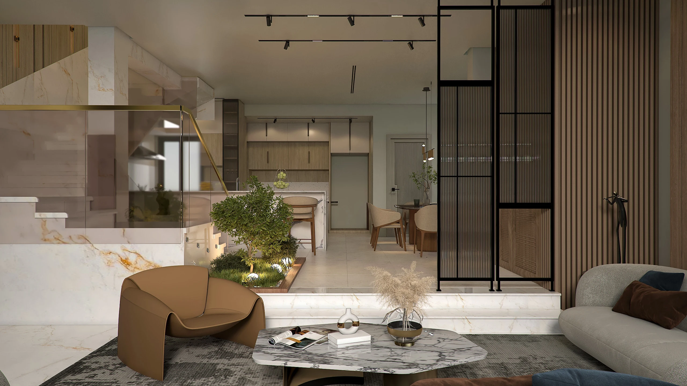
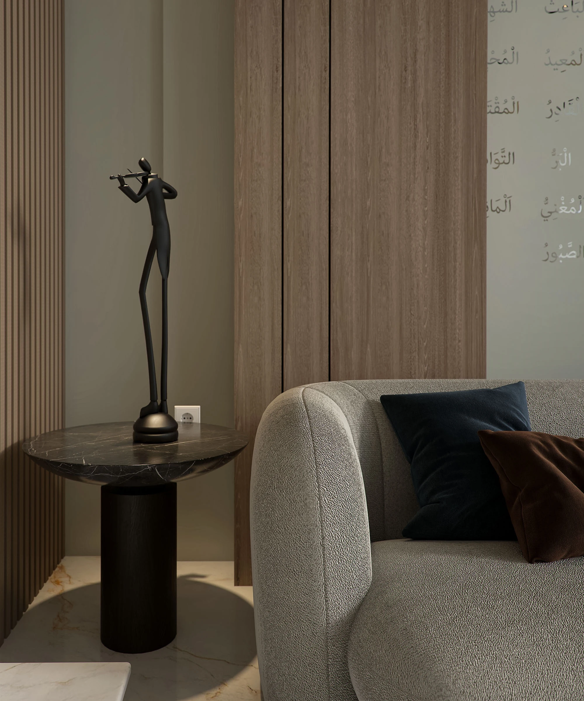
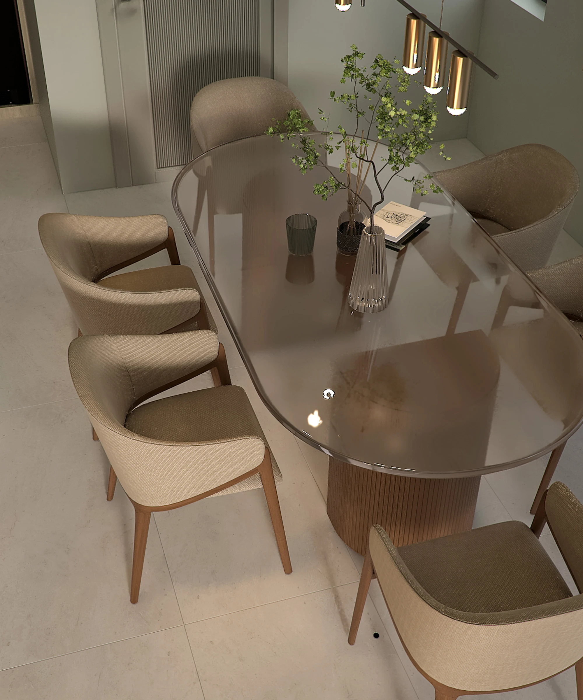
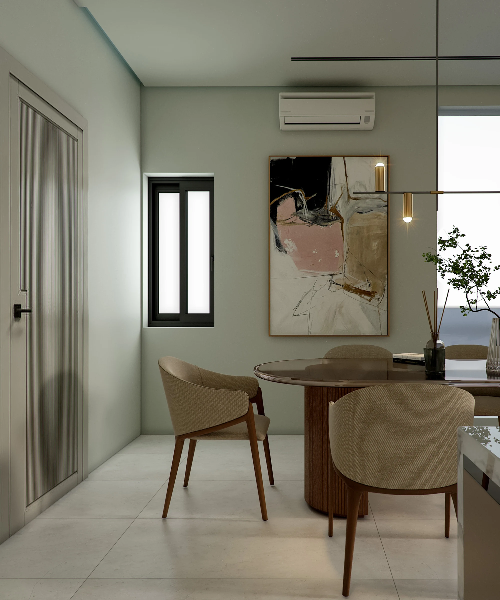
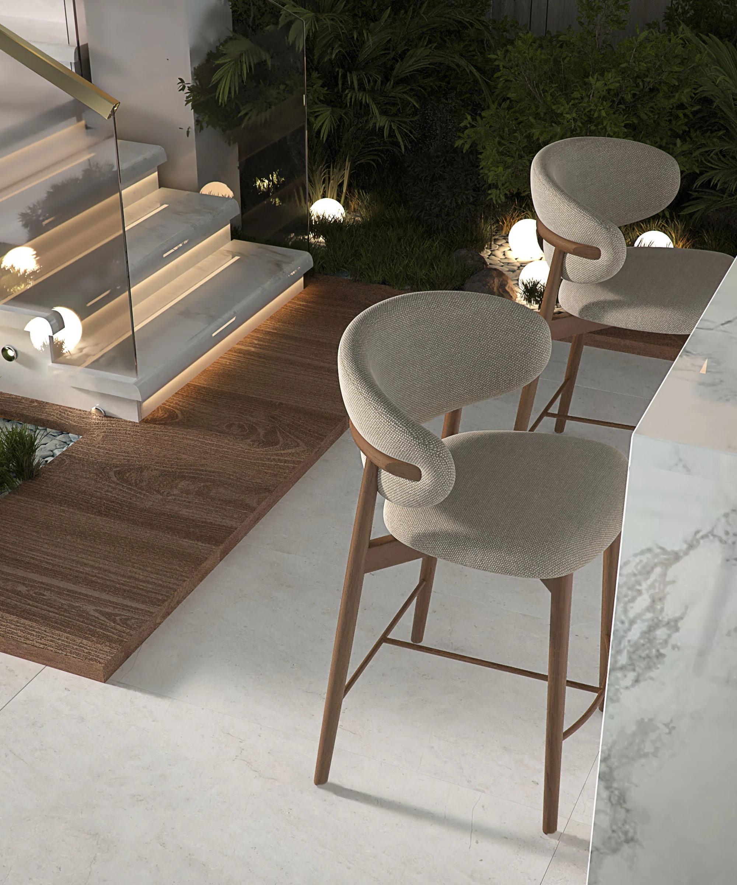
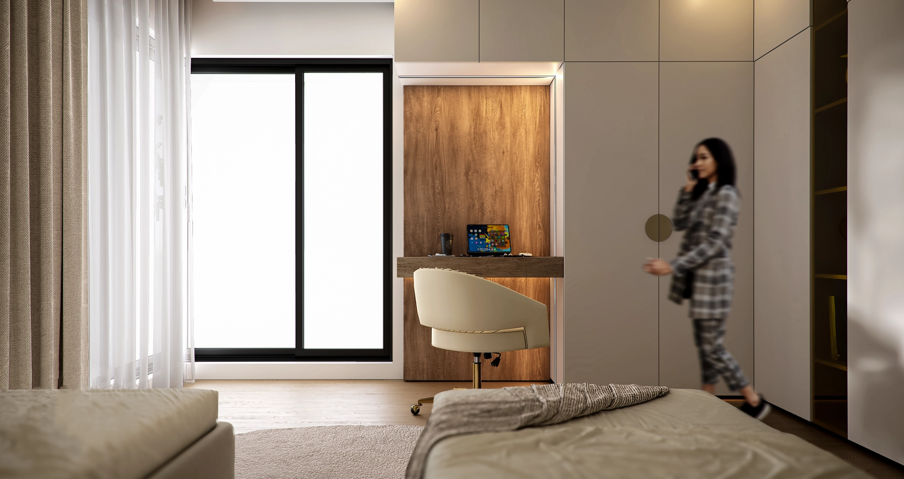
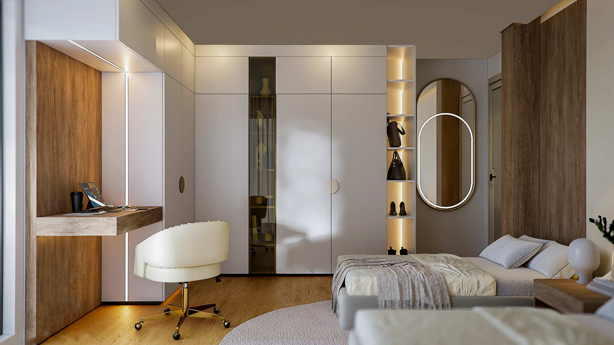
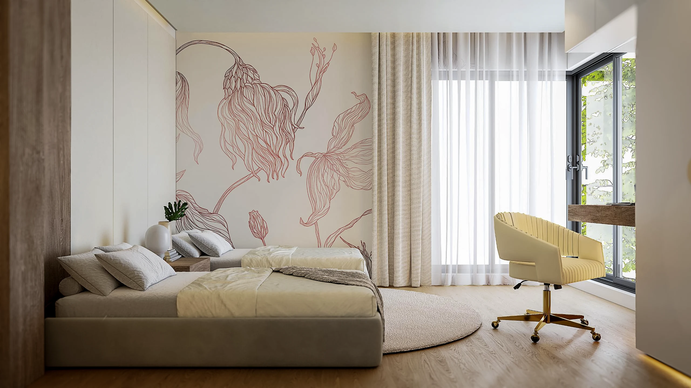
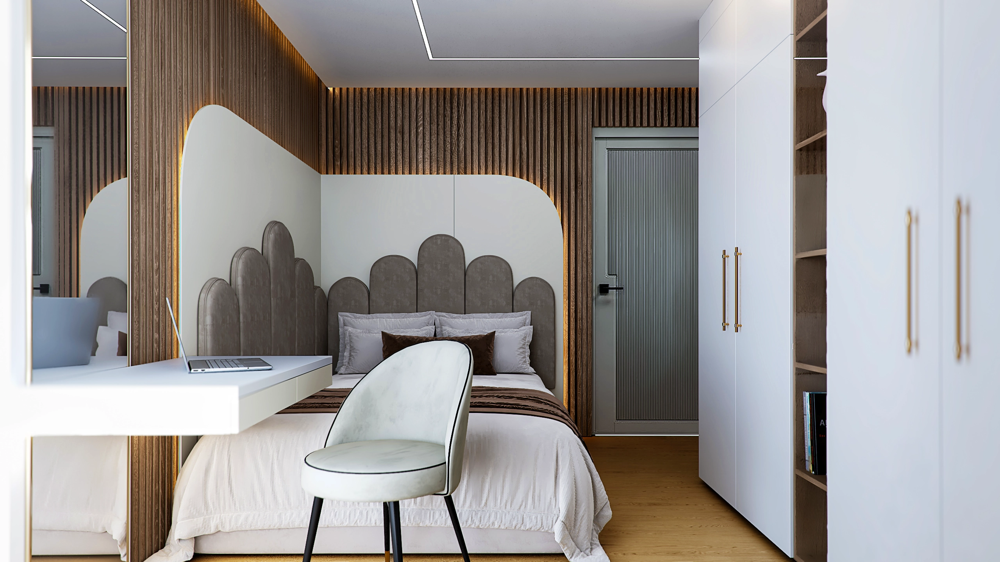
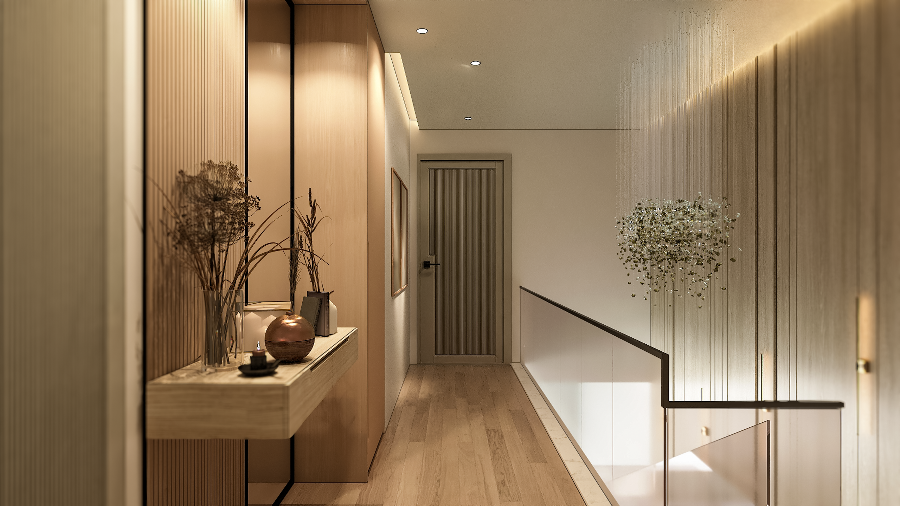
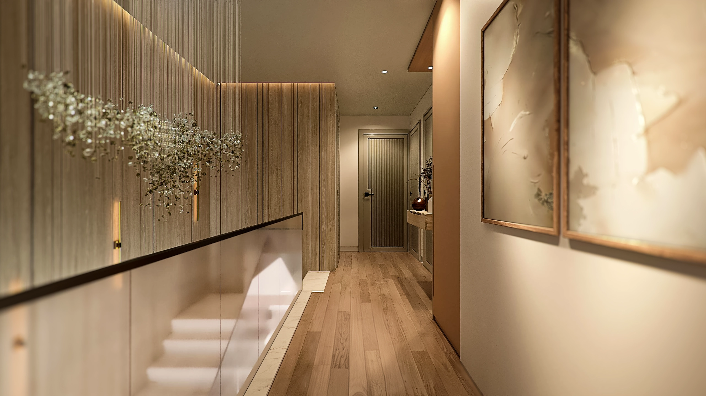
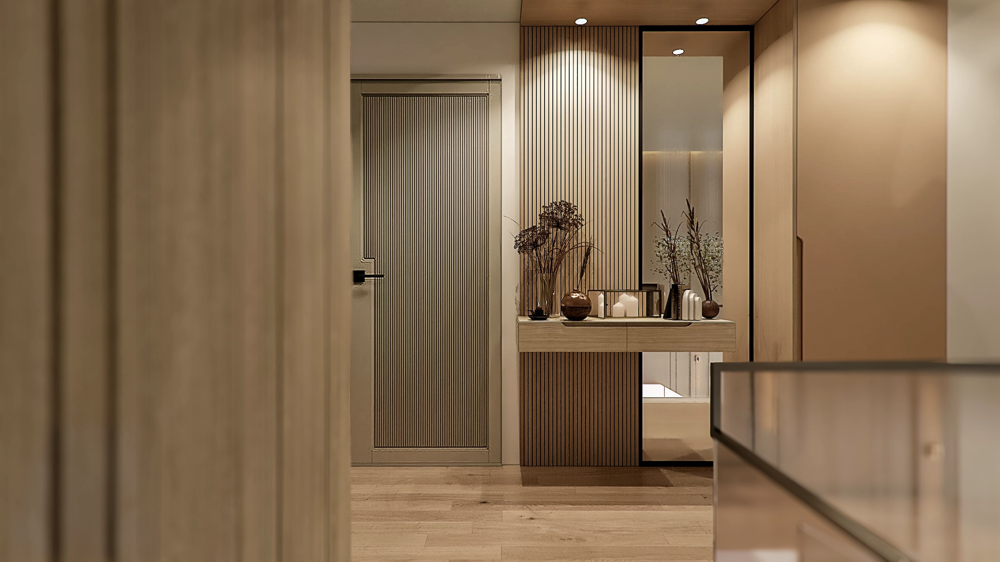
Design Resolution
Depth without visual noise.
Materiality was treated as part of the architecture rather than decoration. Warm neutrals, tactile surfaces and carefully placed lighting establish continuity while allowing individual rooms to retain their own moments of contrast and intimacy.
Interior Architecture
Architecture establishes the calm.
The interior architecture is resolved through clear spatial relationships, measured transitions and carefully integrated built elements. This allows the decorative layer to support the architecture rather than compete with it — a distinction that is central to Akili Studio's interior architecture and design process.
A considered journey
Designed to feel personal today — and remain relevant tomorrow.
Villa Aurea is an expression of Akili Studio's approach: precise planning, emotional intelligence and enduring design decisions.